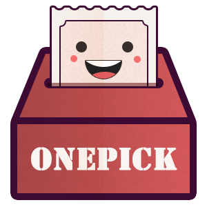

<ion-view hide-nav-bar="true">
  <ion-content class="mypage-view" style="margin-top: 0">

    <div class="mypage-head">
        <div class="avatar" >
          
          <h4>{{ profile.name }}</h4>
        </div>

        <div class="tabs  tabs-striped tabs-top" id="tab-navi">
          <a class="tab-item active"
            ng-click="votesShow()"
            ng-class="{'active': btnActive}">我的问题</a>
            <span style="color: #ffffff;">|</span>
          <a class="tab-item " ng-click="questionShow()" ng-class="{'active': !btnActive}">我的投票</a>
        </div>
    </div>

    <div class="mypage-content">
      <div ng-show="!myVar">
        <div  class="timeline">
        <div ng-repeat="vote in votes" >
          <div class="timeline-thumb bg-color-red timeline-icon"></div>
          <div class="card">

            <a class="item item-text-wrap" >
              <div class="timeline-item">
                <h3>{{ vote.content }}</h3>
                <p>{{ vote.date }}</p>
              </div>
            </a>
          </div>

        </div>
      </div>
      </div>

      <div ng-show="myVar">
        <div class="actQueTitle devider">
          <h2>正在进行的问题</h2>
        </div>

        <div class="actQ">

          <div class="list card">
            <div class="item item-body">
              <ion-slide-box active-slide="myActiveSlide" ng-show="true" does-continue="true">
                <ion-slide ng-repeat="actQuestion in actQuestions" >
                  <div>
                    <h3>{{ actQuestion.content }}</h3>
                    <p>还有{{ actQuestion.timeLeft }}小时结束
                      <span>  已有{{ actQuestion.votePeople }}人投票</span>
                    </p>
                    <div class="row">
                      <div class="col">
                        <p>A.{{actQuestion.options.A}}</p>
                        <div class="item circle-square">
                          
                        </div>
                        <progress max="100" value="{{actQuestion.values.A}}"> </progress>
                      </div>
                      <div class="col">
                        <p>B.{{actQuestion.options.B}}</p>
                        <div class="item circle-square">
                          
                        </div>
                        <progress max="100" value="{{actQuestion.values.B}}"> </progress>
                      </div>
                    </div>
                  </div>
                </ion-slide>
              </ion-slide-box>
            </div>
          </div>
        </div>

        <div class="oldQueTitle devider">
          <h2>历史问题</h2>
        </div>
        <div  class="timeline">
          <div ng-repeat="oldQuestion in oldQuestions" ng-click="modal.show(); idPass(oldQuestion.$id)">
            <div class="timeline-thumb bg-color-red timeline-icon"></div>
            <div class="card">

              <a class="item item-text-wrap" >

                <div class="timeline-item">
                  <h3>{{ oldQuestion.content }}</h3>
                  <p>{{ oldQuestion.date }}</p>
                  <div class="circle"></div>
                </div>
              </a>
            </div>

          </div>
        </div>

      </div>
    </div>

  </ion-content>
</ion-view>